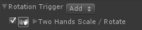
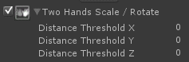
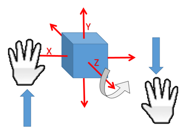
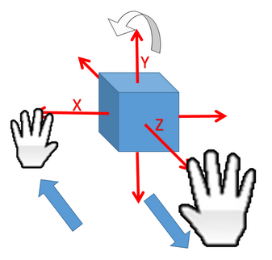

Rotation Trigger and Rules |
Top Previous Next |
|
Rotation Trigger and Trigger Values The Rotation Trigger indicates that the user performed a rotation interaction.
Rotation Trigger Rules You can use the following rules with the Rotation Trigger:
 The rule fires whenever the user’s two hands are performing a rotation gesture. This gesture is defined by moving the hands in 3D in the following manner:
 Figure 94: Move Object Around the Z Axis
 Figure 95: Move Object Around the Y Axis
You can specify the minimal distance the hands need to move from their initial location where they were detected to start the rotation. If the Distance Threshold is set to zero, the rotation will start immediately. Otherwise, it will start only when the distance between the hands passes the specified threshold.
|